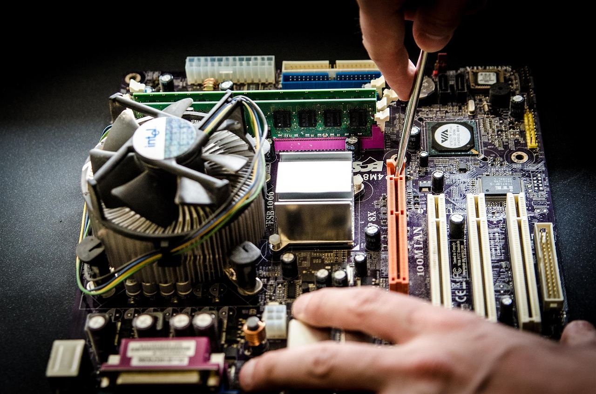

On-Site IT Support for Santa Rosa & Sonoma County
Patient, personal, and professional tech help — we come to you.
Call Now: (707) 595-0805
CoEntropy.net is a locally owned IT support service serving homes and small businesses throughout Santa Rosa and Sonoma County. When your computer, network, or devices are giving you trouble, we make house calls — no dropping off your machine, no waiting in line, no jargon. Just friendly, experienced help right where you need it.
Services
PC, Mac & Linux Repair
Hardware and software troubleshooting, OS reinstalls, performance tuning, and upgrades for all platforms.
Network Setup & Troubleshooting
Home and small business Wi-Fi, routers, switches, and wired networks. Fast, reliable, and secure.
Virus & Malware Removal
Complete removal of viruses, spyware, ransomware, and other threats — plus advice on staying protected.
Smartphone & Tablet Support
Setup, configuration, data transfer, and troubleshooting for iOS and Android devices.
Data Backup & Recovery
Don't lose your memories and important files. Setup automated backups and recover lost data.
Smart Home Setup
Smart doorbells, thermostats, speakers, and Bluetooth devices — configured and working the first time.
Why CoEntropy.net?
Hi, I'm Brendan Coen, owner and technician at CoEntropy.net. I've been solving computer problems for Sonoma County residents and businesses for years, and I believe tech support should be patient, plain-spoken, and actually solve your problem — not create new ones.
I hold CompTIA Security+ and CompTIA Network+ certifications, meaning I've demonstrated professional-level knowledge in both cybersecurity and networking — the same certifications required by many IT departments and government agencies.
Whether you're a first-time computer owner or a seasoned user who just ran into something unfamiliar, I'll meet you where you are.


What Clients Say
"I have worked with Brendan for over a dozen years and consider him absolutely essential to the health of everything electronic in my house. He is courteous, friendly, and patient, but - above all - he's good! I've referred him to numerous friends and they have all had the same experience."
"Set up our whole home network including the smart devices. Everything works perfectly now. Explained everything clearly without making me feel dumb."
"Saved years of family photos from a failing hard drive. I can't recommend CoEntropy.net highly enough. Fast, professional, and genuinely caring."
Service Area
CoEntropy.net provides on-site IT support throughout Santa Rosa and the greater Sonoma County area, including Rohnert Park, Petaluma, Sebastopol, Healdsburg, Windsor, Guerneville, and surrounding communities. Not sure if we cover your area? Give us a call — we'll let you know.
Ready to Get Your Tech Working?
Call or use the contact widget below to get in touch. Most issues can be scheduled within 1-2 business days.
Call Now: (707) 595-0805